再也不用每月手動清資料。Power Query 真正厲害的地方，不是「匯一次」而是把整理流程存成可重跑步驟；下個月資料一到，重新整理就能再跑一次。
什麼是 ETL
Extract（取資料）→ Transform（清資料）→ Load（載入 Excel）。Power Query 把這三步全部視覺化，不用寫程式碼。

常見操作
在 Mac 上通常也是從「資料 → 取得資料」進去，再從檔案、資料表或其他來源匯入。進入 Power Query 編輯器後，可以拆欄、合併欄、移除列、轉置、樞紐/反樞紐、合併查詢（類似 JOIN）、附加查詢（類似 UNION）。如果某些資料來源選項和 Windows 畫面不完全一樣，先記住流程概念比硬背選單位置更重要。
M 語言
let
來源 = Excel.CurrentWorkbook(){[Name="訂單"]}[Content],
篩選 = Table.SelectRows(來源, each [金額] > 1000),
排序 = Table.Sort(篩選, {{"金額", Order.Descending}})
in
排序為什麼要用
傳統複製貼上的工作流程：每個月花 2 小時。用 Power Query 第一次設定 30 分鐘，之後每月按「重新整理」，通常只要幾秒到幾十秒。對 macOS 使用者來說，這也是最值得優先建立的自動化主路線，因為它比一開始就跳進 VBA 更穩、更容易交接。
macOS 重點Mac 版 Excel 已經能把 Power Query 當成正式工作流主力工具，但不同資料來源的支援深度仍可能和 Windows 有差異。學這課時，請先抓住「可重跑清理流程」這件事，而不是糾結每個按鈕位置是否和別人的 Windows 螢幕完全相同。